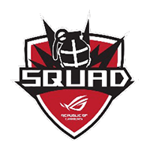

ROG NO.1
GAMING BRAND
The Best Router from the Brand that Knows Gamers Most
A powerful Wi-Fi router is a critical yet often overlooked weapon in your gaming arsenal. During online gaming, the router is frequently overtaxed as it works to deliver the performance you need to game your best. Additionally, simultaneous bandwidth demands from the many devices present in modern households combine to push home networks to their limits. Providing the ultimate gaming experience is the core value of ROG. ROG and ASUS gaming routers live up to this promise and are the best comrades with your ROG gear to help you achieve glory in every battle.
Award-Winning Routers for Game-Winning Players
Ultimate Acceleration to Empower Your Rig
Success in online gaming not only depends on your gaming rig, it also depends on the performance of the network connecting it to game servers around the world. ASUS gaming routers pave the path to victory by ensuring the best connections and accelerated performance.
-
Prioritized Gaming Device
ROG motherboards come with Intel LAN Gigabit Ethernet and GameFirst software to provide higher Internet throughput and lower ping times while consuming less CPU resources.
-
Optimized Gaming Ports
All traffic passing through the gaming LAN ports on the ROG Rapture gaming router are given top priority.
-
Game Boost
(Adaptive QoS)All gaming traffic passing through ROG & ASUS gaming routers can be prioritized to ensure maximum gameplay performance.
-
Gamers Private Network
Connect along the shortest route between your home network and the game server for shortest ping times and lowest latency.
-
Power to Spare
Just like your gaming system, the processing power of your router is critical. With powerful quad-core* CPUs, ROG & ASUS gaming routers provide the computational capability to efficiently handle heavy download and upload traffic for all connected devices.
* Specifications and features vary by model. Please refer to specification pages for full details. -
Mobility without Limits
While most serious gaming is done on your PC with a wired connection to your router, you probably don't want to be tethered by a network cable all the time. With their innovative antenna designs and wireless technologies such as RangeBoost and AiRadar Beamforming, ROG & ASUS gaming routers extend the Wi-Fi range and give maximum performance anywhere you want to play mobile games.

Gaming features
you need
Switch to Menu
PC/Console Gamers
Triple-level Game Acceleration
-
LEVEL 1
Optimized Gaming Ports
ROG Rapture gaming router provides gaming LAN ports that are optimized for gaming devices. All traffic on these ports is given top priority, so your gaming devices always have the best internet connection.
-
LEVEL 2
Game Boost (Adaptive QoS)
Game Boost analyzes network traffic and prioritizes gaming packets, giving games the best possible performance. Game Boost can be activated instantly with a single click on the Gaming Center dashboard, and it supports many popular consoles, including PS3™, PS4™, PS4™ Pro, PlayStation® Vita , Wii U™, Nintendo 3DS™ and Xbox One®.
-
LEVEL 3
Gamers Private Network®
ASUS Gaming routers include built-in support for the Gamers Private Network®, powered by wtfast®, which provides private, optimized internet connections to game servers, minimizing ping and latency to ensure smooth, lag-free gaming.
Faster Ping Times for More Wins
Gamers' Private Network by wtfast®
High ping times and ping variations can be disastrous in heated battles where every millisecond counts. Built-in wtfast® gives your PC the shortest, most efficient connection to your game server, ensuring the lowest possible ping times for your gameplay.
* "All game trademarks, service marks, trade names, product names, and logos are the property of their respective owners. wtfast is a 3rd party service and not endorsed by or affiliated with the games supported."
ROG Gaming Center – Rule the Battle Field
The ROG-themed Gaming Center* interface provides easy point-and-click control over every incredible feature. Game Dashboard provides a real-time heads-up about all of your devices and connections.
* ROG Gaming Center is on ROG Rapture gaming routers only
Switch to Menu
Switch to Menu
Mobile Gamers
AiMesh - Whole-home Wi-Fi Optimized for Gaming
AiMesh routers are powerful yet flexible and easy to use. With AiMesh whole-home Wi-Fi, you don't have to choose between great wireless coverage and ultimate performance - you can have both! And, when you set up Game Boost to prioritize gaming traffic, it will automatically work on all AiMesh routers in your network, so you can enjoy excellent gaming performance anywhere.
To Know more about AiMesh, check here.
You Decide Where to Play
RangeBoost technology improves long range Wi-Fi performance and eliminates Wi-Fi dead zones. Together with MU-MIMO technology, which enables multiple devices to connect simultaneously at the fastest Wi-Fi speeds without their bandwidth being impacted by other devices, you can game with confidence from any room in the house.
Switch to Menu
Switch to Menu
Live Streamers
The Power to Handle both Gaming and Video Streaming
ROG & ASUS routers have powerful processing power and advanced networking technology to make sure you have bandwidth to spare for both gaming and streaming.
AiProtection Pro-Fortified Frontline Security
AiProtection Pro keeps your network running smoothly and protects against common threats like DDoS attacks by identifying network behavior patterns and blocking unwanted traffic before it can paralyze the network. It also protects against the web cam being remotely controlled for cryptocurrency mining or as a zombie device to attack other devices on the internet. AiProtection Pro syncs with Trend Micro's cloud database and retrieves the latest ASUS firmware updates to ensure your router and all network devices always have the best protection.
To Know more about AiProtection, check here.
Switch to Menu
Recommendation
From The Pro
ROG ESPORT TEAMS
-
DARK PASSAGE
Turkey -
ROG ARMY
Spain -
DETONATOR
Japan -
ENCE
Finland -
WHITE RABBIT GAMING
South Africa -
Moba ROG
Italy -
ROG FEMALE
Czech Republic -

ROG SQUAD
Czech Republic -
ROG WARRIORS
Hungary -
ROG Centurion
Korea -
ROG SQUAD
Czech Republic -
Refund Gaming
Vietnam